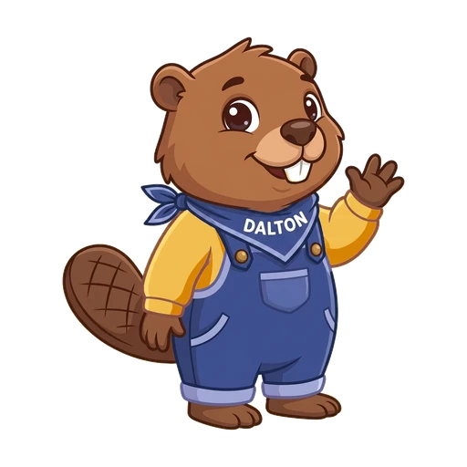

Afwerken en inleveren

Vandaag werkt je groep de trailer af: een aftiteling met jullie namen en de bron van de muziek, samen nakijken met de checklist, en dan lever je de link van jullie ontwerp in. Er staan 20 punten op.
Wat heb je nodig?
-
De opdracht in Google Classroom
Hier vind je de lespagina. Op het einde voeg je hier de link van jullie ontwerp toe en lever je in.
-
Deze lespagina
Hier lees je wat je moet doen, stap voor stap. Bij elke stap staat wie monteur is.
-
Het Canva-ontwerp van je groep
Hier werk je de trailer af. Je gsm met de Canva-app heb je nodig als er nog een clip ontbreekt.
Canva zelf open je in stap 1, in een tabblad van Chrome. Daarna lever je in: iedereen van de groep zelf.
Dit maak je vandaag
Jullie trailer, afgewerkt: de titel, de clips, de muziek, en achteraan een witte pagina met jullie namen en de bron van de muziek.
Na deze les kan je
- je trailer nakijken met de checklist en afwerken wat ontbreekt;
- een aftiteling maken met de namen van je groep en de titel, de maker en de bron van de muziek;
- je ontwerp delen met een link die iedereen van de school kan bekijken, en die link inleveren in Classroom.
Vast? Probeer het in deze volgorde
- Klik in de stap op Toon stapjes
- Je groep
- Je leraar